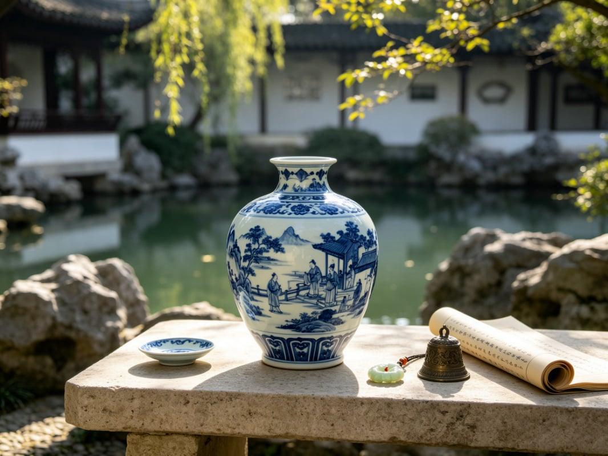
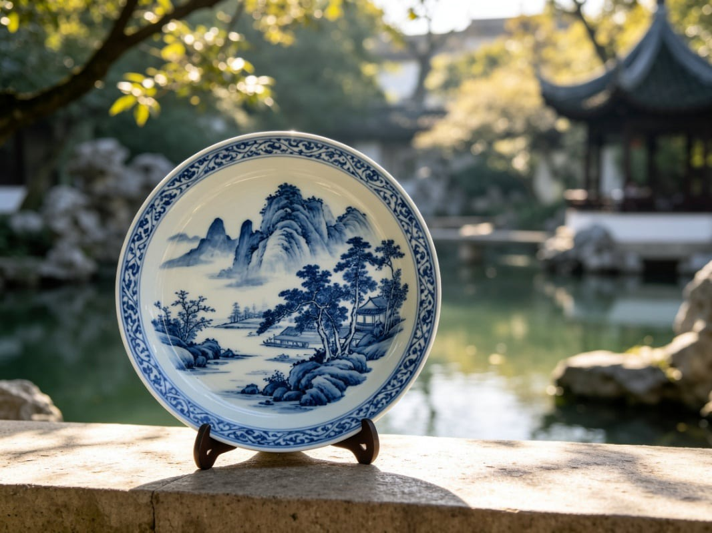
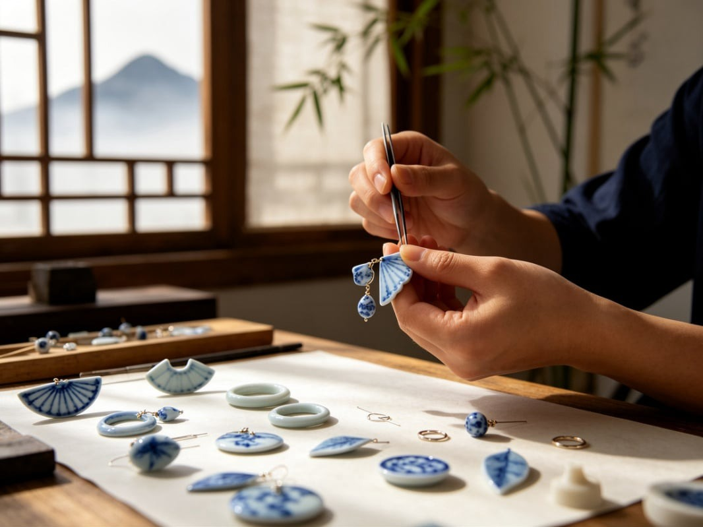
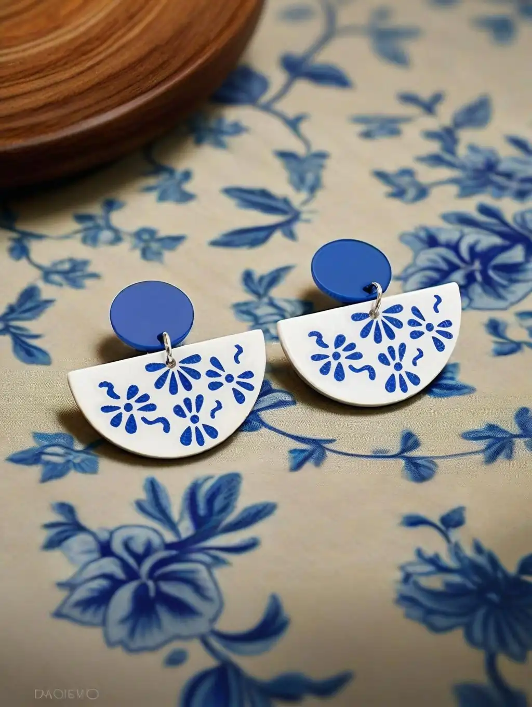
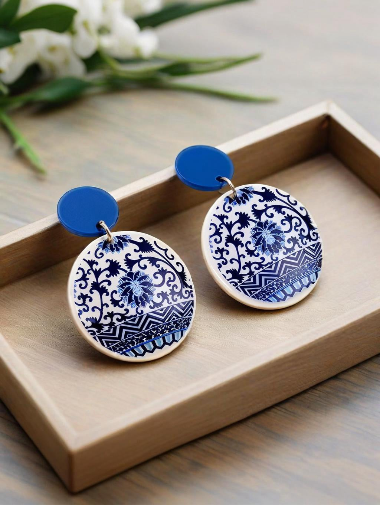
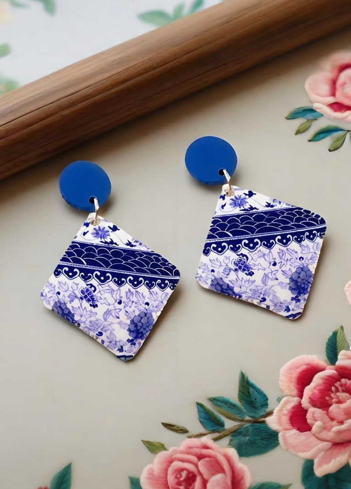
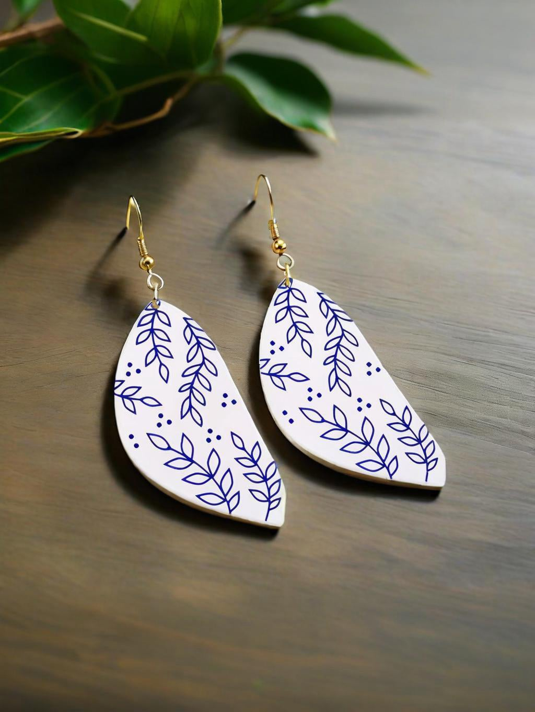
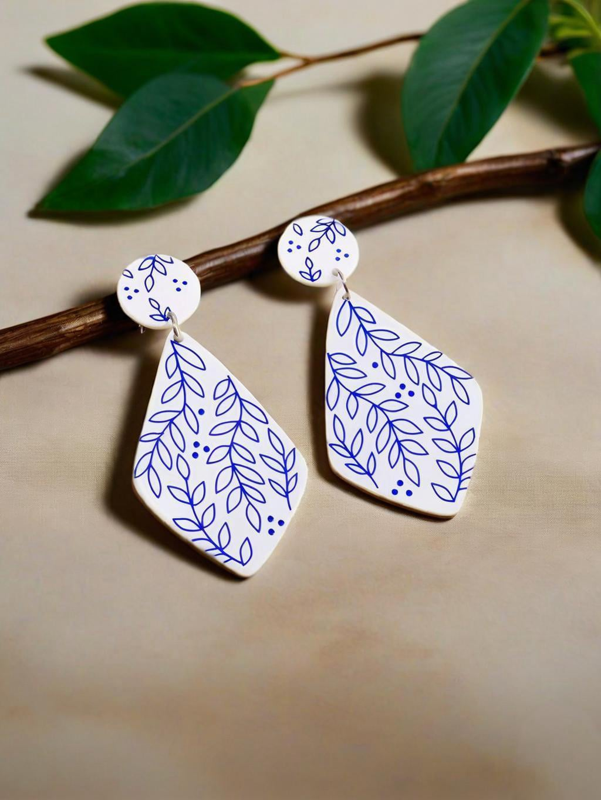
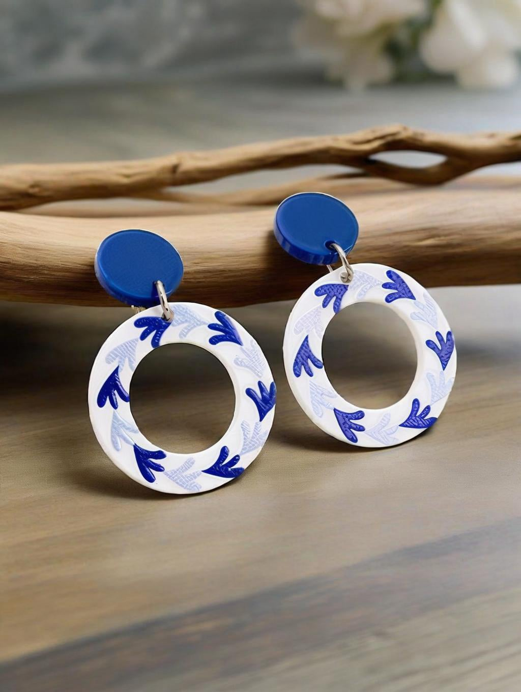
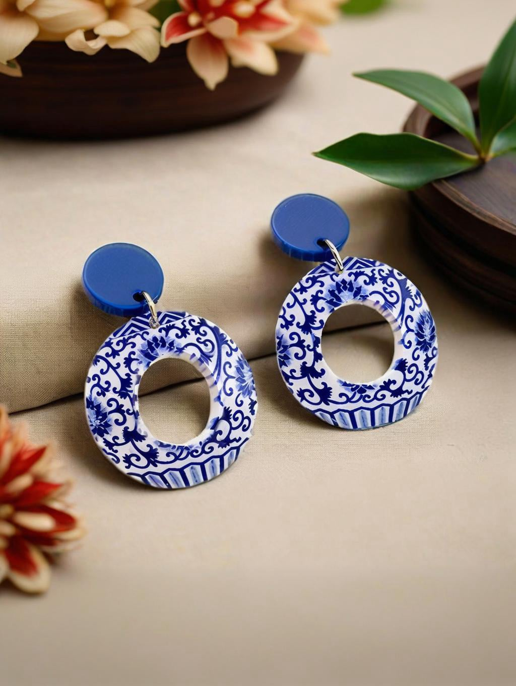

Blau-weißes Porzellan entstand in Jingdezhen während der Yuan-Dynastie und ist seit über 600 Jahren eine weltweit gefeierte Ikone der klassischen chinesischen Ästhetik. Alte Handwerker verwendeten weißes Porzellan als Leinwand und natürliches Kobalterz als Tinte, um mit nur zwei Farben — Blau und Weiß — Berglandschaften und ineinander verschlungene Ranken zu malen. Diese minimalistische, aber raffinierte visuelle Sprache trägt die sanfte, zurückhaltende Eleganz des Ostens in sich und verbindet künstlerische Schönheit, traditionelle glückbringende Bedeutungen und positive Feng-Shui-Energie.
I. Blau-Weiß: Die klassische ästhetische Grundlage mit glückbringender Energie
Seit Jahrhunderten hält blau-weißes Porzellan an seiner charakteristischen Zweifarbpalette fest. Dies ist nicht nur eine ästhetische Entscheidung — sie ist tief in der traditionellen Fünf-Elemente-Philosophie und der Weisheit der Segenswünsche verwurzelt.
Porzellanweiß – assoziiert mit Metall (金). Weiß entspricht dem "leeren Raum" in der chinesischen Tuschmalerei — es symbolisiert Reinheit, Klarheit des Geistes und Offenheit. Im Feng Shui zieht Metallenergie edle Unterstützer an und löst Konflikte auf. Es wird angenommen, dass das Tragen von Weiß negative Energie reinigt und Frieden sowie reibungslosen Fortschritt in allen Unternehmungen bringt.
Natürliches Kobaltblau – assoziiert mit Wasser (水). Der gedämpfte, neblig-blaue Farbton stammt von natürlichen Mineralpigmenten und erinnert an ferne Himmel und ruhige Seen. Wasserenergie regiert Reichtum, Weisheit und dauerhafte Vitalität.
Zusammen erzeugt die Metall-Wasser-Synergie von Blau und Weiß ein ausgewogenes, fließendes Energiefeld — von dem angenommen wird, dass es Glück ansammelt und stetiges Karrierewachstum unterstützt. Die entsättigte blau-weiße Palette schmeichelt allen Hauttönen und lässt sich mühelos mit jedem Outfit kombinieren, wobei sie ein einzigartig chinesisches Gefühl stiller Eleganz und erlesenen Geschmacks vermittelt.

II. Traditionelle Motive: Segenswünsche, die in jedes Detail eingewoben sind
Die dekorativen Muster auf diesen Ohrringen sind originalgetreu aus klassischen kaiserlichen Ofen-Designs der Ming- und Qing-Dynastie übernommen. Alle Motive zeichnen sich durch geschwungene, abgerundete Linien aus — von denen im Feng Shui angenommen wird, dass sie positive Energie anziehen und negative Einflüsse abwehren. Jedes Muster trägt seinen eigenen Segen:
II. Traditionelle Motive: Segenswünsche, die in jedes Detail eingewoben sind
Die dekorativen Muster auf diesen Ohrringen sind originalgetreu aus klassischen kaiserlichen Ofen-Designs der Ming- und Qing-Dynastie übernommen. Alle Motive zeichnen sich durch geschwungene, abgerundete Linien aus — von denen im Feng Shui angenommen wird, dass sie positive Energie anziehen und negative Einflüsse abwehren. Jedes Muster trägt seinen eigenen Segen:
• Ineinander verschlungene Blumenranken – kontinuierliche Ranken symbolisieren ewige Segnungen, Familienwohlstand und beständigen Reichtum.
• Kreis- und geschlossene geometrische Formen – ununterbrochene, geschlossene Schleifen symbolisieren Vollständigkeit und Einheit. Es wird angenommen, dass das geschlossene Design Reichtum und Glück bewahrt.
• Minimalistische Blumen-, Blatt- und Landschaftsmotive – klar und raffiniert, beruhigen diese Designs den Geist, mildern die Präsenz und sollen hilfreiche Mentoren und Verbündete anziehen.
• Vasen-förmige Silhouetten – das chinesische Wort für "Vase" (瓶, píng) klingt ähnlich wie das Wort für "Frieden" (安, píng). Dieses Design trägt den Wunsch nach Sicherheit und Geborgenheit für alle Jahreszeiten in sich.Ineinander verschlungene Blumenranken – kontinuierliche Ranken symbolisieren ewige Segnungen, Familienwohlstand und beständigen Reichtum.


III. Alte Kunst, modernes Tragen: Blau-weiße Ästhetik als Ohrringe neu interpretiert
Traditionelle Porzellanwaren — groß, schwer und zerbrechlich — werden am besten als Ausstellungsstücke geschätzt und lassen sich nur schwer in die tägliche Kleidung integrieren. Unsere Designer haben klassische Gefäßsilhouetten, authentische blau-weiße Paletten und legendäre glückbringende Motive dekonstruiert und sie als leichte, tragbare Ohrringe neu interpretiert — wodurch museale klassische Schönheit in alltagstaugliche Accessoires verwandelt wird.
Die Kollektion bietet eine große Vielfalt an Silhouetten: geschwungene Porzellanscherben, klassische Vasenformen, fächerförmige Paneele, Kreise, Tropfen, Rauten und Blattformen — alle bilden originalgetreu die traditionellen handgemalten blau-weißen Linien nach, während sie die Schwere des Alters mildern, um dem modernen täglichen Stil zu entsprechen.
Sie müssen keine großen antiken Porzellanstücke sammeln. Ein einziges Paar Ohrringe an Ihrem Ohr trägt die Eleganz der klassischen chinesischen Ästhetik, ausgleichende Feng-Shui-Energie und eine vollständige Reihe zeitloser Segenswünsche des Ostens.
Banibuba Kuratierte Auswahl
Banibuba präsentiert Ihnen eine kuratierte Kollektion chinesischer Ohrringe im blau-weißen Porzellan-Stil — kreiert für alle, die die klassische östliche Kultur schätzen. Jedes Stück erbt die authentische blau-weiße Palette und die traditionellen glückbringenden Motive und trägt Jahrhunderte erlesener Eleganz und die stillen Segnungen von Frieden und Wohlstand in sich.
Bei Fragen oder Anpassungswünschen stehe ich gerne zur Verfügung.

Halbmond-Acryl-Ohrringe im blau-weißen Porzellan-Stil

Acryl-Ohrringe als Tropfen mit traditionellem blauen Blumenmuster

Acryl-Ohrringe mit chinesischem Pflaumenblüten-Muster

Zweilagige Acryl-Tropfenohrringe mit blauem Blumenmuster

Fächerförmige blau-weiße Acryl-Ohrringe

Blaue Acryl-Ohrringe, inspiriert von chinesischen Vasen

Acryl-Ohrringe in Form einer weißen Vase mit blauem Muster

Runde blau-weiße Ohrringe mit ineinander verschlungenem Blumenmuster

Acryl-Ohrringe in Form einer schmalen Vase mit blauem Muster

Blau-weiße Acryl-Ohrringe mit Blattmuster

Blaue Acryl-Ohrringe mit Schneeflockenmuster

Acryl-Ohrringe mit Wellen- und Rautenmuster

Acryl-Ohrringe im chinesischen Stil in Form von Weidenblättern

Blaue Ohrringe mit Rauten- und Blattmuster

Blaue Acryl-Creolen mit Blattmuster

Doppelte blau-weiße Acryl-Creolen

Hohle Creolen mit Blumenmuster im blauen Porzellan-Stil

Bogenförmige blau-weiße Acryl-Ohrringe